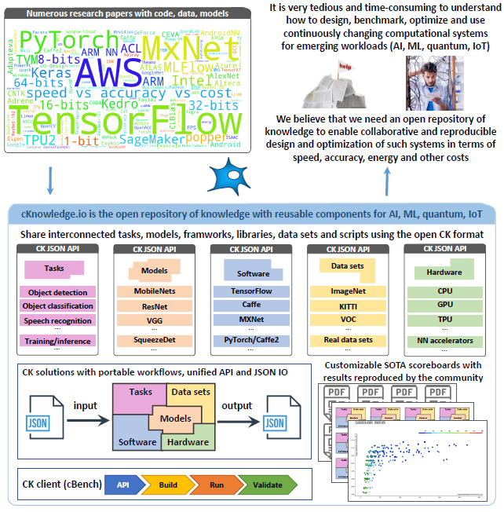
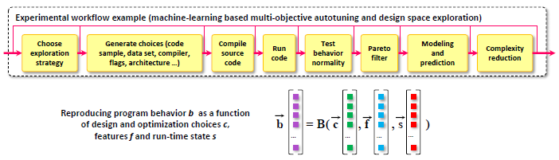

简介
导航
简介¶
Note
关于内核配置的详细说明见：项目启动。关于 CK 的详细内容见：ck。
集体知识框架（Collective Knowledge framework，简称 CK）有助于将任何软件项目组织成一个可重用组件（算法、数据集、模型、框架、脚本、实验结果、论文等）的数据库，具有共同的自动化行为和基于 FAIR 原则 （可查找性（findability）、可访问性（accessibility）、互操作性（interoperability）和可重用性（reusability））的可扩展元描述。
CK 框架有 统一的命令行界面（CLI）、Python API 和基于 JSON 的网络服务来管理 CK repo 和添加、查找、更新、删除、重命名和移动 CK 组件（有时称为 CK 条目或 CK 数据）。
CK repo 是可重复使用的 CK 组件的人类可读数据库，可以在任何本地目录和容器内创建，从 GitHub 和类似服务中提取，并作为标准存档文件共享。CK 组件简单地包装了用户工件，并提供了一个可扩展的 JSON 元描述，其中有相关工件的常见 自动化操作。
- 自动化操作
使用 CK 模块 实现的 – Python 模块的功能通过 CK API 和 CLI 以统一的方式暴露出来，并使用可扩展的字典进行输入/输出（I/O）。字典的使用使其更容易支持持续集成工具和网络服务，并在保持向后兼容的同时扩展功能。统一的 I/O 也使得跨项目重复使用这些 action 成为可能，并将它们串联成统一的管道和工作流程。
CK 相关论文：paper, shorter pre-print
CK 资源库的根目录包含
.ckr.json文件，用来描述这个资源库，并指定对其他 CK 资源库的依赖关系，以明确地重复使用它们的组件和自动化操作。CK 使用类似于
.git的.cm目录来存储所有组件的元信息，以及所有组件的唯一 ID，以便能够找到它们，即使它们的用户友好名称随着时间的推移而改变（CK 别名）。CK 模块 总是存储在 CK 资源库的 module / < CK module name > 目录下。例如，
module/dataset或module/program。它们有一个带有相关自动化 action 的module.py（例如，module/dataset/module.py或module/program/module.py）。这种方法允许多个用户为相关的组件添加、改进和重用共同的自动化 action，而不是为每个新项目从头开始重新实现。CK 组件存储在 < CK module name > / < CK data name > 目录下。例如，
dataset/text1234-for-nlp或dataset/some-images-from-imagenet。每个 CK 组件都有一个
.cm目录，其中有描述特定工件的meta.json文件和info.json文件，以持有特定工件的出处，包括版权、许可证、创建日期、所有贡献者的名字，等等。CK 框架有一个内部 默认的 CK 资源库，里面有 稳定的 CK 模块 和许多研究项目中最常用的 自动化 action。当 CK 框架第一次使用时，它还会在用户空间中创建一个本地 CK 库，作为 scratch 使用。
CK 提供了简单的命令行界面，类似于自然语言来管理 CK 的资料库、条目和 action：
ck <action> <CK module name> (flags) (@input.json) (@input.yaml)
ck <action> <CK module name>:<CK entry name> (flags) (@input.json or @input.yaml)
ck <action> <CK repository name>:<CK module name>:<CK entry name>
下一个例子演示了如何在任何平台上编译和运行共享汽车基准，然后创建 CK 程序组件 的副本：
pip install ck
ck pull repo:mlcommons@ck-mlops
ck search dataset --tags=jpeg
ck pull repo:ctuning-datasets-min
ck search dataset --tags=jpeg
ck search program:image*
ck find program:image-corner-detection
ck load program:image-corner-detection --min
ck help program
ck compile program:image-corner-detection --speed
ck run program:image-corner-detection --env.OMP_NUM_THREADS=4
ck run program --help
ck cp program:image-corner-detection local:program:new-program-workflow
ck find program:new-program-workflow
ck benchmark program:new-program-workflow --record --record_uoa=my-test
ck replay experiment:my-test
CK 程序模块 使用社区同意的版本范围的简单标签描述对软件检测插件和元包的依赖性：
{
"compiler": {
"name": "C++ compiler",
"sort": 10,
"tags": "compiler,lang-cpp"
},
"library": {
"name": "TensorFlow C++ API",
"no_tags": "tensorflow-lite",
"sort": 20,
"version_from": [
1,
13,
1
],
"version_to": [
2,
0,
0
],
"tags": "lib,tensorflow,vstatic"
}
}
CK 还提供了一个具有简单 API 的 Python 库，可以轻松用于网络应用或持续集成服务：
import ck.kernel as ck
# 等价于 "ck compile program:image-corner-detection --speed"
r=ck.access({'action':'compile', 'module_uoa':'program', 'data_uoa':'image-corner-detection',
'speed':'yes'})
if r['return']>0: return r # 统一的错误处理
print (r)
# 等价于 "ck run program:image-corner-detection --env.OMP_NUM_THREADS=4"
r=ck.access({'action':'run', 'module_uoa':'program', 'data_uoa':'image-corner-detection',
'env':{'OMP_NUM_THREADS':4}})
if r['return']>0: return r # 统一的错误处理
print (r)
根据用户的反馈，CK 开发了一个开放的平台，以帮助社区分享 CK 组件，创建实时记分牌，并参与合作实验：https://cKnowledge.io。
建议阅读 Michel Steuwer 关于 CK 基础知识的 漂亮博文 ！
可以在 cKnowledge.io/repos 找到部分兼容 CK 的仓库列表。
当前 CK 具有如下特性：
由于这种组件的统一自动化动作、API 和 JSON 元描述，可以应用 DevOps 方法，将它们连接成平台无关的、可移植的、可定制的和可重复的 程序管道（工作流）。这样的工作流程可以自动适应不断变化的环境、模型、数据集和非虚拟化平台，通过自动检测目标平台的属性，使用 CK 软件检测插件在用户平台上找到所有需要的组件，使用可移植的 CK 元包安装缺失的组件，构建和运行代码，并统一和测试输出。
最终，CK 帮助连接研究人员和从业人员，利用 开放的知识库 与 SOTA 记分牌 和 可复制的论文，协作地共同设计、基准测试、优化和验证新型 AI、ML 和量子技术。这种记分牌可以用来在从超级计算机到边缘设备的不同平台上寻找和重建最有效的 AI/ML/SW/HW 堆栈，同时权衡速度、精度、能量、尺寸和不同成本。然后可以在 Docker 和 Kubernetes 内部部署稳定和优化的 CK 工作流程，以简化生产中创新技术的整合和采用。
CK 最终目标是通过通用的 API、CLI 和 JSON 元描述，以可重用构件和可移植工作流的形式，帮助每个人共享、重用和扩展他们的知识。利用 CK 技术将 DevOps 原则引入 ML&systems 研发，使其更具协作性、可复制性和可重复使用性，实现可移植的 MLOps，并使其有可能了解复杂和 “黑箱” 计算系统内部发生了什么。
CK 的梦想是看到可移植的工作流程与新的系统、算法和发表研究技术并一起分享，以便能够在不同的数据集、模型、软件和硬件中快速测试、重复使用和比较！这就是为什么支持相关的重现性和基准倡议，包括工件评估、MLPerf™、PapersWithCode 以及 ACM 工件审查和徽章。

CK 平台¶
cKnowledge.io：拥有稳定的 CK 组件、工作流程、转载的论文和复杂计算系统（AI、ML、quantum、IoT）的 SOTA 记分牌的开放门户：
为 ML&systems R&D 提供 CK 驱动的工作流、自动化操作和可重用工件¶
Reproducibility initiatives: [methodology], [events]
Showroom (public projects powered by CK):
Student Cluster Competition automation: SCC18, digital artifacts
ML-based autotuning project: reproducible paper demo, MILEPOST
ACM SW/HW co-design tournaments for Pareto-efficient deep learning
Portable CK workflows and components for ML Systems: https://github.com/mlcommons/ck-mlops
GUI to automate ML/SW/HW benchmarking with MLPerf example (under development)
Examples of CK components (automations, API, meta descriptions):
program : image-classification-tflite-loadgen [cKnowledge.io] [GitHub]
program : image-classification-tflite [GitHub]
soft : lib.mlperf.loadgen.static [GitHub]
package : lib-mlperf-loadgen-static [GitHub]
package : model-onnx-mlperf-mobilenet [GitHub]
package : lib-tflite [cKnowledge.io] [GitHub]
*docker : * [GitHub]
docker : speech-recognition.rnnt [GitHub]
package : model-tf- [GitHub]
script : mlperf-inference-v0.7.image-classification [cKnowledge.io]
jnotebook : object-detection [GitHub]
